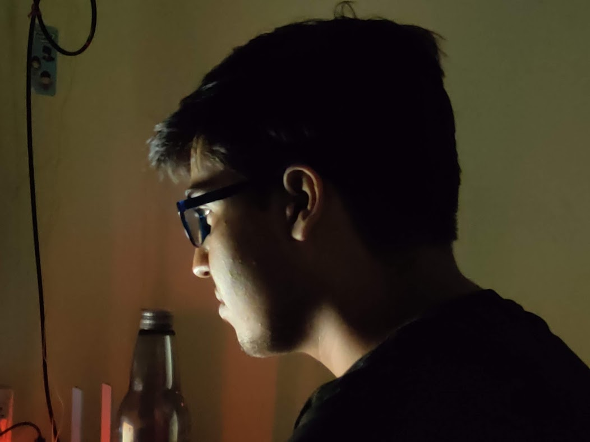

Intro
Aditya Kumar
Well-versed in numerous programming languages including C, C++, JAVA, HTML5, CSS3, JavaScript, NodeJS, SQL along with Understanding of AI and Machine learning techniques.
Skills:
C, C++, Java, Machine Learning, HTML5, CSS3, JavaScript, NodeJs, SQL, MongoDB, Unity3D, Python, UNIX, Shell Scripting.
Languages:
English (C1 Level), Hindi (Native Speaker), German (A1 Level)
Education:
- Master of Science: Biomedical Computing - 2020-Present Technical University of Munich
- Bachelor of Technology: Computer Science and Engineering - 2016-2020 Birsa Institute of Technology, Sindri [8.87/10 GPA (Minimum passing Grade=5)]
- All India Senior School CerIficate: Physics, Chemistry, MathemaIcs, English, Computer Science- 2013-2015 Delhi Public School, Ranchi 91.2%
- All India Secondary School CerIficate - 2003-2013 Army Public School, Ranchi 10/10 CGPA
Achievements:
- Smart India Hackathon 2019 (Organized by MHRD and AICTE): 1st Runner Up
- Topper of class in Bachelor education
- GATE 2020 All India Rank 1726
- IELTS 8.0 Band
Certifications:
- CCNA Rou8ng and Switching: Cisco Networking Academy
- Data Structures and Algorithms: NIIT
- Programming in JAVA: NIIT
- C/C++: Aptech Computer Education
About

Hallo! Ich bin Aditya.
I am a Masters student in Biomedical Computing at Technical University of Munich. I can speak English, Hindi and ein bisschen German.
I find it interesting to apply the knowledge in various aspects of my field. Computer Science is not just a profession for me, it is a hobby and studying computer science and related sciences is an integral part of my hobby. I believe the combination of Computer Science and Medicine is revolutionary and has a lot of potential to discover new possibilities. I also find scientific and research work very interesting and dedicate a lot of time in self-study mainly in Mathematics and Computer Science. My professors and teachers played a vital role in sparking my interest towards research works. They encouraged me to read, research and practice. This has allowed me to work on a project “Improved RSA Algorithm based on cloud database using Proth Number and Mersenne Prime Number” and a corresponding paper. The future prospects of my project is immense as in an age, where digital data storage and communication is growing rapidly, the role of cryptography has become integral. Cryptography and encryption have become one of the hottest technologies in the IT security industry. I am also intrigued by the fields such as Cognitive Systems, Bioinformatics and Data Science. l feel that the machines possessing intelligent behaviour can be beneficial in health care sector, business analysis, online commerce, pharmaceutical, etc. I have a fascination for language and an enthusiasm for modelling intelligent behaviour using computational tools like modelling human cognition through simulated processes like acquired rule-based systems. I am currently working on “Modelling Human Brain to improve thinking and reasoning of Alzheimer patients”, which employs machine learning to detect Alzheimer and then decision making capabilities of a human is simulated.
Check out my projects and publications!!
I am planning to specialize in Machine Learning or related fields to gain a better insight at methods for using data to automatically produce knowledge, understand intelligent machine behaviour and how computational tools can make machines smart and intelligent so that they can integrate well with Medical Science. I aim to take my interests in machine learning and deep learning and further extend it with statistical data analysis and modelling machine behaviour.
I am a highly energetic and driven individual, and use these attributes to try to motivate and inspire others. I am a critical thinker with strong analytical skills.
Contact
Work
PUBLICATIONS
- Utilizing GPS data to track potential COVID19 patients using cloud based document database and preventing further contagion
publication (Apr 2020) "International journal for science and advance research in technology". See Publication
- Improved RSA Algorithm based on cloud database using Proth Number and Mersenne Prime Numbe (Feb 2020) "International Journal of Scientific Research & Engineering Trends" See Publication
- Modified RSA Algorithm based on cloud database using Proth Number and Mersenne Prime Number (Dec 2019) "Grin Academic Publishing". See Publication
PROGRAMMING PROJECTS
- AR/VR Simulation of Educational Lectures using Unity3D. (June 2018-July 2018)
- An Insurance Agent Hiring System for Future Generali using HTML,JavaScript, CSS, NodeJs, vidyo.io API (Nov 2018 – Mar 2019) *This Project won 1st Runner Up prize at SIH 2019-Software Edition See Project
- A UI based system to make online transactions secure using “Improved RSA Algorithm based on cloud database using Proth Number and Mersenne Prime Number”(Aug 2019 – Dec 2019)
- Prediction of House Prices using Regression. (Jul 2020 – Aug 2020) See Project
Blog